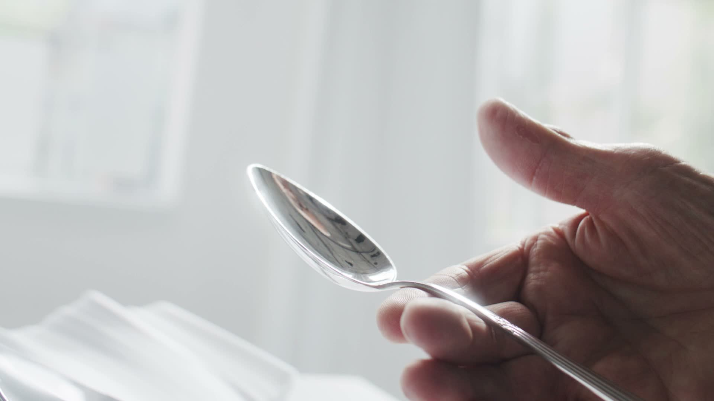
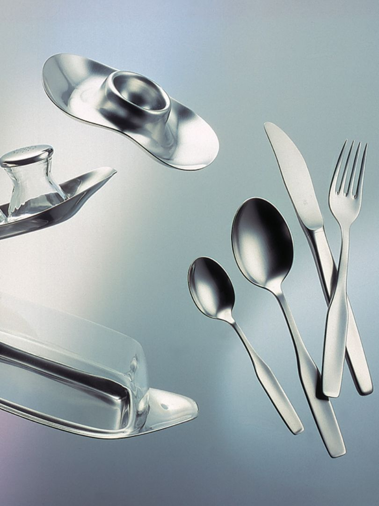
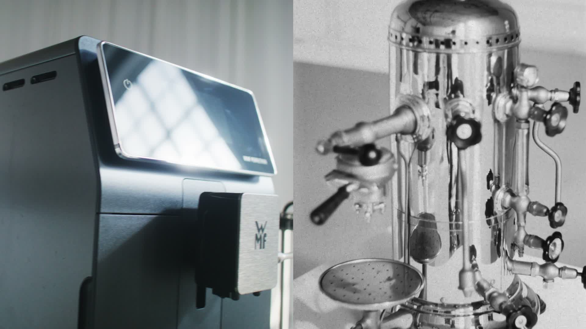
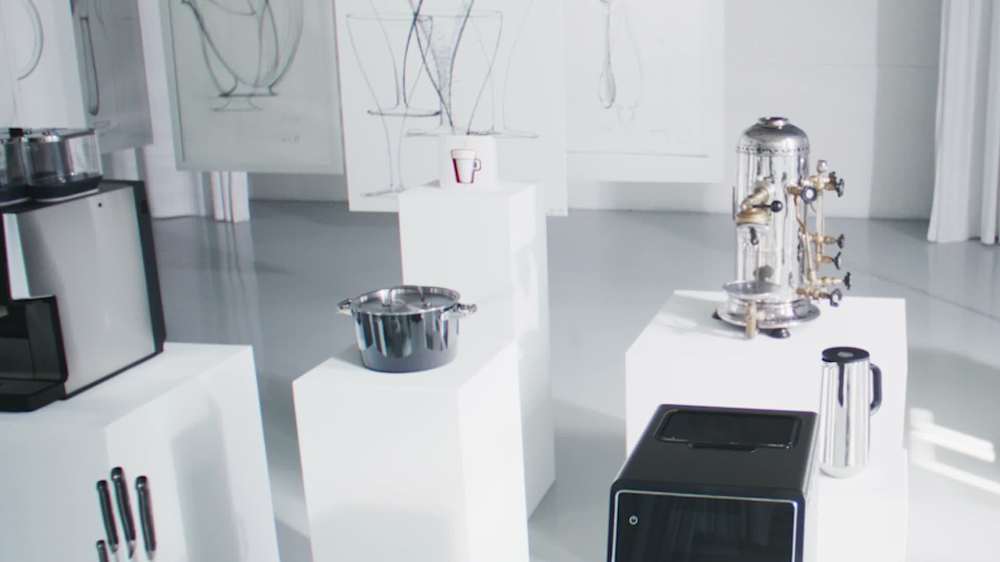

PROTOTYPE v2 (marketing-led) · proposed page wmf.com/de/en/our-story.html (DE: /de/de/unsere-geschichte.html) · built only from live wmf.com PageBuilder modulesv1 chronological · Research and rationale →
Film: WMF heritage campaign 2023, shot in the WMF museum collection
v2 change: the stage now sells. The sub-line names what you can buy, and the primary CTA goes to the first shoppable section ("Shop our icons") instead of "Explore our history". Why "Since 1853": research links "since/established" cues to higher perceived quality and willingness to pay (Baumert & de Obesso 2021; Pecot et al. 2018), and it reuses the homepage's "SINCE 1853" band, which today links nowhere. A11y: muted loop, visible pause button (WCAG 2.2.2), no autoplay under prefers-reduced-motion.
02 · Text · Centered (wmf Text row)
Inspired by professionals. Designed for home.
WMF began in 1853 as a metalware works in Geislingen. Today our cookware, cutlery and coffee machines are at work in hotel kitchens, restaurants and cafés, and what we learn there goes into everything we design for your home.
v2 change: leads with the brand book's reason-to-believe line instead of company facts. Founders, the 1880 name and Groupe SEB move to the timeline and the FAQ. Copy rules: no origin claim ("began in Geislingen" is a founding fact), no superlatives.
v2 change: the chips follow what people shop (product worlds), not eras. Each chip keeps a "since" date, so the heritage cue stays visible while scrolling. Build: live Sub Navigation + Anchor rows; stickiness is a small CSS addition, with scroll-padding-top so it never hides keyboard focus (WCAG 2.4.11).
Anchor · cookware04 · Text + Image · Image left
The first WMF Sicomatic, 1927
Cookwaresince 1927
Under pressure since 1927
In 1927 we made our first pressure cooker, the Sicomatic, and started making cookware from stainless steel. In 1984 WMF Perfect put the whole mechanism into a handle you can take off.
Today's Perfect pressure cookers and Cromargan® pots and pans carry that idea into your kitchen.
Pattern: heritage hook → today's benefit → shop, through the two CTAs into the category and Masterpiece pages. This is the loop Fissler 180 and Montblanc Meisterstück close and Zwilling, Alessi and Miele leave open. Sources: aboutwmf.com/en/history (1927 Sicomatic, 1984 Perfect); wmf-professional.com "Cromargan® – a success story" (1927 stainless cookware). Claim rules: no "saves time/energy", "durable" or "18/10".
Anchor · cutlery05 · Text + Image · Image right

From the WMF archive
Cutlerysince 1932
Cromargan® on the table
In 1930 we gave our stainless steel its own name: Cromargan®. Two years later it moved from the kitchen to the dining table as our first Cromargan® cutlery.
Cromargan protect® followed, designed for more resistance to scratches in daily use. From the everyday set to the special dinner, it's the same material, refined.
Why: Cromargan® is WMF's own material and the strongest design code the brand has (compare Rimowa's grooves, Le Creuset's Volcanic). Sources: aboutwmf.com/en/history (1930); wmf-professional.com (1932 cutlery). Claim rules: keep ® on every mention; Cromargan protect® copy avoids the corporate "maximum scratch resistance". The launch year (2008 or 2009) is left out until it's confirmed.
Anchor · design06 · Text + Image · Image left

Werkstatt Wagenfeld, 1950s
Design classicssince 1954
Design that stays on the table
Bauhaus-trained designer Wilhelm Wagenfeld began working with WMF in 1949 and opened his studio, the Werkstatt Wagenfeld, in 1954. His "Max und Moritz" salt and pepper shakers from that year are still in our range.
Some designs come back. In 2026 we re-issued the cutlery Wolfgang Karnagel designed for Lufthansa first class, as a limited edition.
Why: "iconic design" is a brand-book pillar, and re-editions are the clearest commercial use of heritage (Fissler Original-Profi Retro, Montblanc Origin, Lagostina "Patrimonio"). Today the Wagenfeld PDPs never mention Max und Moritz or the Bauhaus; this section can be reused there as a brand module. Sources: aboutwmf Design Principles (1949, 1954); Lufthansa press release, aboutwmf.com, 27 Mar 2026.
Anchor · coffee07 · Text + Image · Image right

Then and now: WMF coffee machines
Coffeesince 1927
From the café counter to your kitchen
We built our first large coffee machines for cafés and hotels in 1927. Our professional machines are still behind the counter in cafés, hotels and bakeries today.
WMF Perfection brings that experience home: fully automatic coffee machines for espresso, cappuccino and more, at the touch of a button.
Why: coffee is WMF's highest-value category, and the professional heritage is its clearest proof for "Inspired by professionals. Designed for home." Sources: aboutwmf.com/en/history (1927 coffee machines; 2022 Perfection). Claim rules: no statement about where machines are made (brand book), and no "barista quality" or "best coffee".
08 · Video (wmf-video, appearance "new")
Taste matters
Cooking, dining and coffee with WMF, in 30 seconds.
Transcript and description
Brand film "Taste Matters" (2022, 30 s): close-ups of WMF cookware, cutlery and coffee being used in a professional kitchen and at home, ending on the WMF logo and the line "Taste matters". Full transcript to be supplied by Brand.
Why: the brand film is the emotional payoff after the product sections. Option: a re-cut of the 96-second 2023 heritage film without its "170 years" end card would tie the page together better, and could serve the 175th anniversary in 2028. A11y: user-started, captions and transcript needed (WCAG 1.2.2 / 1.2.5).
From a metalware works in Geislingen to kitchens around the world.
1853
It starts in Geislingen
Mill owner Daniel Straub and the brothers Friedrich and Louis Schweizer open a metalware works with 16 employees.
1880
Three letters: WMF
A merger creates the Württembergische Metallwarenfabrik, the name behind the letters.
1904
Art Nouveau
From 1900 WMF works with outside designers. Its Art Nouveau pieces are collected today.
1930
Cromargan® gets its name
WMF registers its own name for the stainless steel it has used since 1927.
1984
WMF Perfect
The pressure cooker whose handle carries the technology. Its successors still carry the name.
2019
An archive with protected status
Around 11,000 objects from WMF's history become a cultural monument of Baden-Württemberg.
v2 change: the five chronological chapters become one swipeable timeline of six moments, placed after the product sections. People who want the story still get it; people who came to shop reach the product worlds first. NN/g's warning about horizontal scrolling applies to the main narrative, which here runs vertically through the product sections; the timeline is a secondary summary. Parked for now: the 1939–45 text and the link to the corporate chronicle on aboutwmf.com; to be revisited with Corporate Communications. Sources: aboutwmf.com/en/history and /de/unternehmen/historie.
10 · Marketing Banner (wmf-marketingbanner)

Keep it in use
Original sealing rings, handles and lids for your WMF pressure cooker and cookware, plus service for your coffee machine.
Why: spare parts are WMF's real proof of long use, and a commercial one, without making a durability claim (Barbour Re-Loved, Rimowa, Miele). Claim rules: no "lasts a lifetime" or "langlebig". Note: the live page /masterpieces/cookware-made-to-last.html already uses "made to last" in its URL; flag it to the claims review.
11 · FAQ · Collapse (wmf_faq_collapse)
Questions about WMF
When and where was WMF founded?
WMF was founded in 1853 in Geislingen an der Steige in Baden-Württemberg. Daniel Straub and the brothers Friedrich and Louis Schweizer started the company as Metallwarenfabrik Straub & Schweizer.
What does WMF stand for?
WMF stands for Württembergische Metallwarenfabrik (Württemberg metalware factory). The company has carried the name since a merger with Ritter & Co. of Esslingen in 1880.
What is Cromargan®?
Cromargan® is WMF's name for the stainless steel it uses for cookware, cutlery and tableware. WMF registered the name as a trademark in 1930. Cromargan protect® is a further development, designed for more resistance to scratches in daily use.
Can I get spare parts for my WMF products?
Yes. You can order original spare parts such as sealing rings, handles and lids for WMF pressure cookers and cookware in our shop. For coffee machines, WMF service can help.
Who owns WMF?
WMF has been part of Groupe SEB since 2016. Groupe SEB also owns brands such as Tefal, Rowenta, Krups and Lagostina. WMF's headquarters are still in Geislingen.
Where are WMF products made?
[Draft, needs Legal sign-off] WMF makes products at its own sites in Germany and other countries, and with selected partners.
v2 change: adds a spare-parts question (a buying question) and moves "Who owns WMF?" down. The answers still cover the real search clusters (founding, name, Cromargan®, ownership, origin) for search and AI answers. Add AboutPage + Organization JSON-LD. Origin question: Legal decides the final wording; no "Made in Germany".
Why: today "WMF Brand" in the footer opens a press-release list and "History" leaves the shop for aboutwmf.com. The proposal replaces both with one on-shop link, "Our story". Further entry points: the homepage "SINCE 1853" band, the Masterpieces hub, and the PDP/PLP brand module ("Category story").